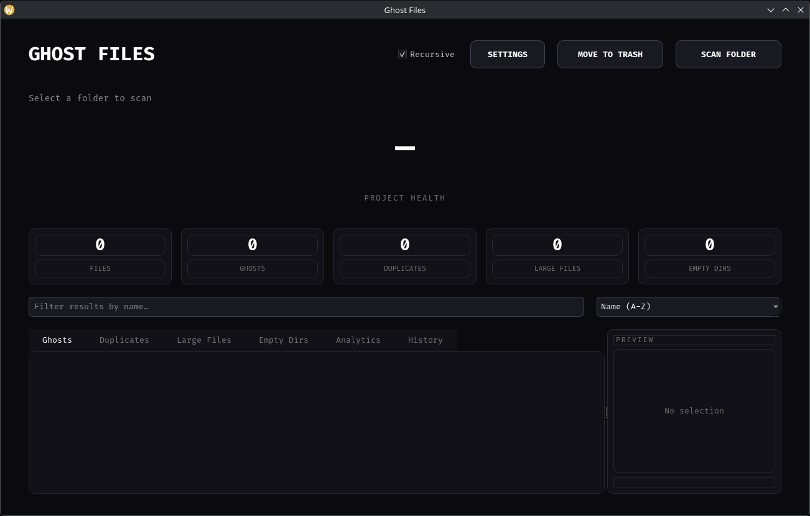
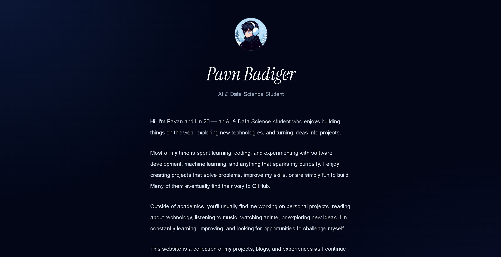

SELECTED PROJECTS · 01—03
Built to make
ideas useful.
A mix of assistive technology, desktop software, and web development. Each project is a chance to learn by building something practical.

01 / DESKTOP TOOL↗
PYTHON · PYSIDE6 · DESKTOP
Ghost Files
A cross-platform file analysis tool for finding duplicates, reclaiming storage, and cleaning up with confidence. Includes scan history, storage analytics, and safe trash-based cleanup.
ARDUINO · SENSORS · IOT
Smart Blind Stick
An Arduino-based assistive navigation project using ultrasonic sensing and real-time sound or vibration alerts to help users detect nearby obstacles.

03 / PERSONAL WEBSITE↗
HTML · CSS · JAVASCRIPT
Portfolio, version 01
My first personal website, built to share projects, skills, and progress as I learn and grow as a developer.